聆听匠人的故事，感受坚守的力量，传承千年的技艺
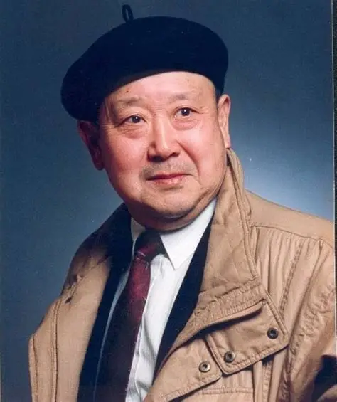
国家级非物质文化遗产京剧项目代表性传承人
尚长荣是国家级非遗京剧代表性传承人，工铜锤花脸、架子花脸，是当代京剧艺术界的泰斗级人物。他出身梨园世家，自幼随父学艺，精研京剧表演艺术七十余载，塑造了曹操、包拯、项羽等无数经典艺术形象，表演刚柔并济、声情并茂，将京剧花脸艺术推向了新的高峰。
他深耕舞台传承与艺术创新，推动京剧经典剧目复排与年轻化传播，长期致力于京剧艺术普及教育，创办传习所、走进校园授课，为京剧艺术的传承与发展作出了卓越贡献，被誉为“当代京剧花脸第一人”。
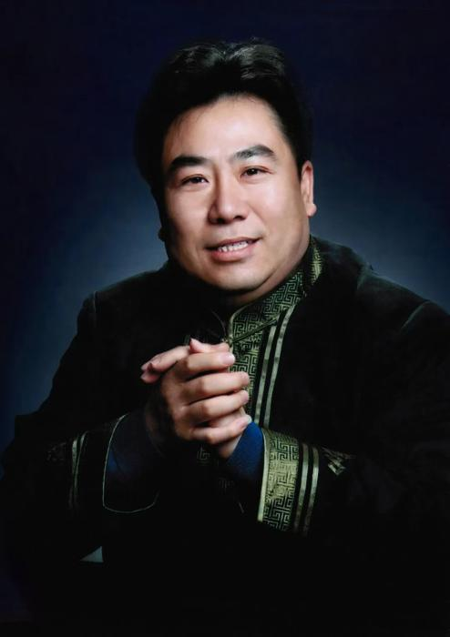
国家级非物质文化遗产剪纸项目代表性传承人
段建珺是国家级非遗和林格尔剪纸代表性传承人，深耕剪纸艺术四十余年，是中国北方草原剪纸的领军人物。他继承并发展了北方草原剪纸粗犷质朴、雄浑大气的艺术风格，作品融合蒙古族文化与草原风情，线条灵动、造型饱满，极具艺术感染力与民族特色。
他建立剪纸传承基地，开展公益教学与校园传承，培养大批剪纸人才，推动剪纸艺术走向全国、走向世界，让古老的民间剪纸艺术焕发新生，用一把剪刀守护着草原民族的文化根脉。
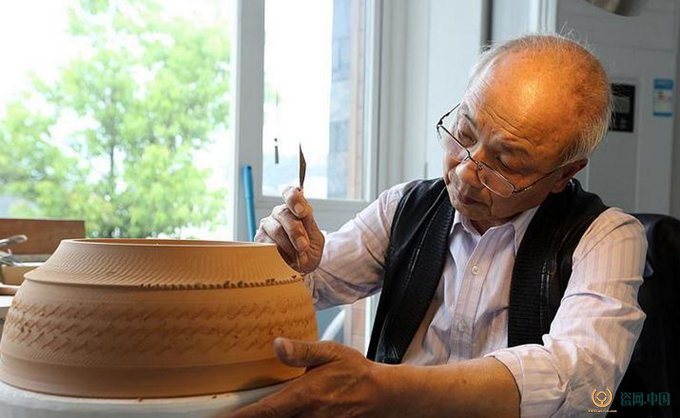
国家级非物质文化遗产龙泉青瓷烧制技艺代表性传承人
徐朝兴是国家级非遗龙泉青瓷烧制技艺代表性传承人，从事青瓷艺术八十余年，是当代龙泉青瓷的领军人物。他精通青瓷配釉、拉坯、烧制全流程，复原了多项失传的青瓷烧制工艺，独创“跳刀纹”“哥弟结合”等经典技法，作品温润如玉、造型典雅，尽显青瓷之美。
他坚守传统技艺并大胆创新，作品兼具古典韵味与现代审美，长期致力于青瓷技艺传承与人才培养，创办工作室、收徒传艺，让千年龙泉青瓷技艺薪火相传，让青瓷文化走向世界舞台。
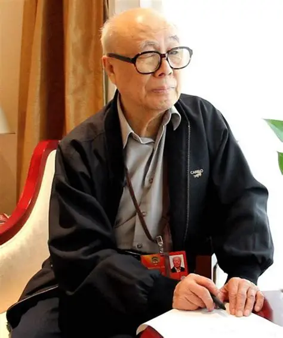
国家级非物质文化遗产中国书法代表性传承人
欧阳中石是国家级非遗中国书法代表性传承人，精通楷、行、草、隶、篆诸体，书法风格端庄秀雅、底蕴深厚，笔力雄健、气韵生动。他是中国书法高等教育的奠基人，构建了完整的书法教育体系，开创了书法专业高等教育的先河。
他毕生致力于书法教学、研究与传承，深耕书法公益传播，让书法艺术走进校园、走进大众，守护中华汉字文化根脉，为中国书法事业的传承与发展作出了不可磨灭的贡献。
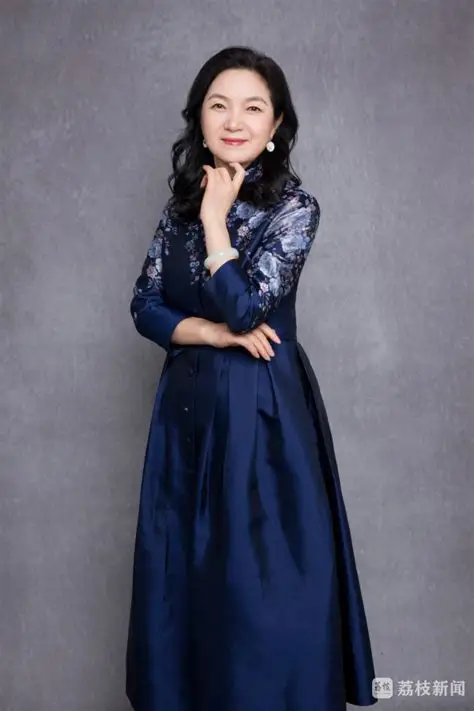
国家级非物质文化遗产苏绣项目代表性传承人
姚建萍是国家级非遗苏绣代表性传承人，专攻苏绣艺术四十余年，创新融合多种苏绣针法，独创“融针绣”技法，作品细腻逼真、意境悠远，被誉为“苏绣皇后”。她创作的多幅国礼级作品被多国元首收藏，成为中国文化外交的重要载体。
她打破传统苏绣局限，推动苏绣与现代设计、文创产业结合，建立传承工作室培养青年人才，让苏绣这一江南绝技走向世界舞台，用一根丝线传承千年匠心。
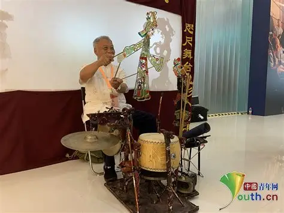
国家级非物质文化遗产皮影戏项目代表性传承人
范正安是国家级非遗泰山皮影戏代表性传承人，精通皮影雕刻、操纵、唱腔、配乐全套技艺，独创“十不闲”绝技，一人独立完成整场皮影戏演出，一人顶一个剧团，被誉为“泰山皮影活化石”。
他坚守皮影戏传统艺术，创新改编现代剧目，常年开展进校园、进社区公益演出，让皮影戏这门古老的光影艺术被新一代人熟知与喜爱，用双手守护着泰山皮影的千年传承。
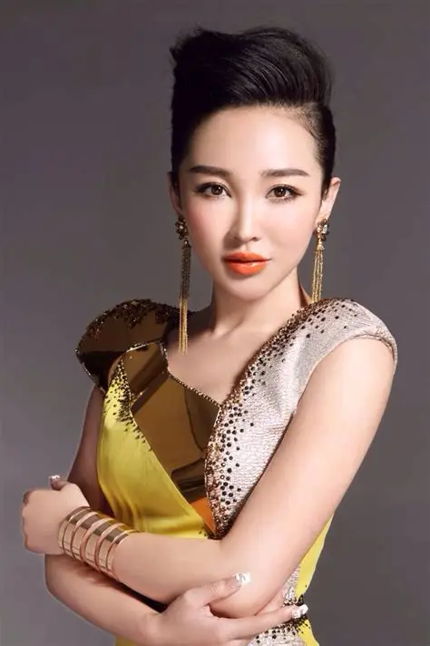
国家级非物质文化遗产昆曲项目代表性传承人
王芳是国家级非遗昆曲代表性传承人，工闺门旦、五旦，昆曲表演技艺精湛，唱腔婉转柔美、身段优雅灵动，演绎《牡丹亭》《长生殿》等经典剧目出神入化，斩获中国戏剧梅花奖、文华奖等多项戏曲界大奖，是当代昆曲表演的领军人物。
她深耕昆曲舞台表演与传承教学，推动昆曲年轻化、大众化传播，让“百戏之祖”昆曲在新时代优雅绽放，用一生守护着昆曲这一古典艺术的瑰宝。
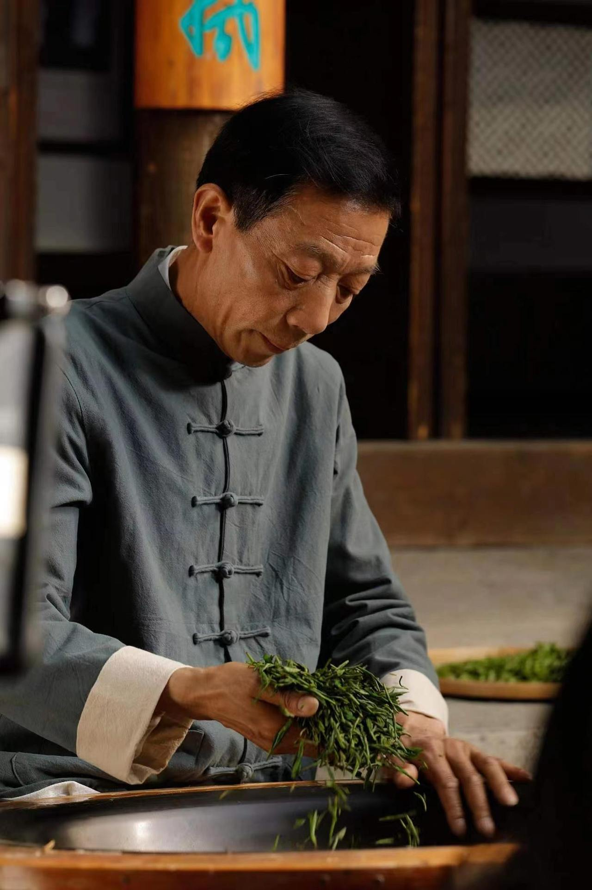
国家级非物质文化遗产西湖龙井采摘和制作技艺代表性传承人
樊生华是国家级非遗西湖龙井采摘和制作技艺代表性传承人，从事龙井茶制作六十余年，精通杀青、辉锅、分拣等全手工制茶工艺，坚守古法技艺不妥协，被誉为“西湖龙井炒制大师”。他炒制的茶叶外形扁平光滑、香气清高持久，尽显西湖龙井的独特韵味。
他致力于龙井茶技艺传承与茶文化传播，开展手工制茶教学，走进校园、社区传授制茶技艺，让西湖龙井这一国茶技艺与茶道文化代代传承，守护着西湖龙井的百年匠心。
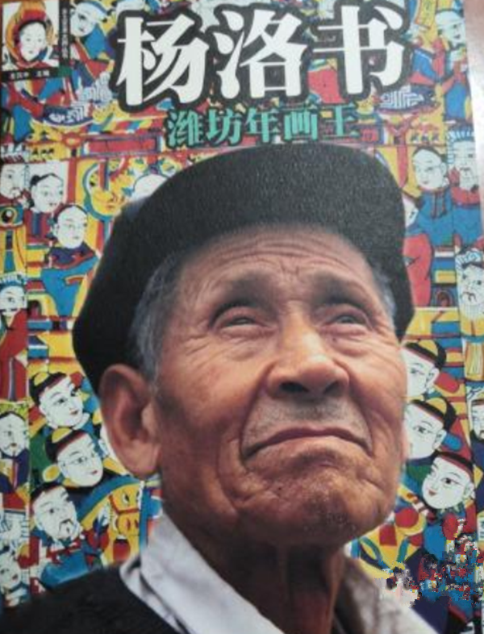
国家级非物质文化遗产杨家埠木版年画项目代表性传承人
杨洛书是国家级非遗杨家埠木版年画代表性传承人，从事木版年画制作八十余年，精通画稿、刻版、套色、印刷全套传统工艺，被誉为“年画王”。他收藏复刻大量绝版年画，保存了杨家埠年画的完整技艺体系，作品色彩浓烈、寓意吉祥，充满浓郁的民俗气息。
他坚持手工刻版印刷，同时创新年画题材，让年画走进现代家居，推动木版年画进校园、出国门，让这一承载民俗年味的艺术代代相传，用木版守护着中国年的文化记忆。
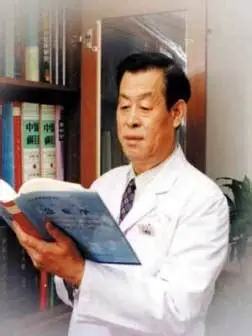
国家级非物质文化遗产中医针灸代表性传承人
石学敏是国家级非遗中医针灸代表性传承人，中国工程院院士，深耕针灸临床、教学、科研六十余年，创立“醒脑开窍”针刺法，在针灸治疗脑病领域享誉世界，开创了针灸治疗中风的新纪元。他手法精准、疗效显著，被誉为“中国针灸第一人”。
他培养海内外针灸人才，推动中医针灸国际化传播，让非遗针灸技艺守护百姓健康，弘扬中华传统医学，让中医针灸走向世界舞台，守护着中医针灸的千年传承。
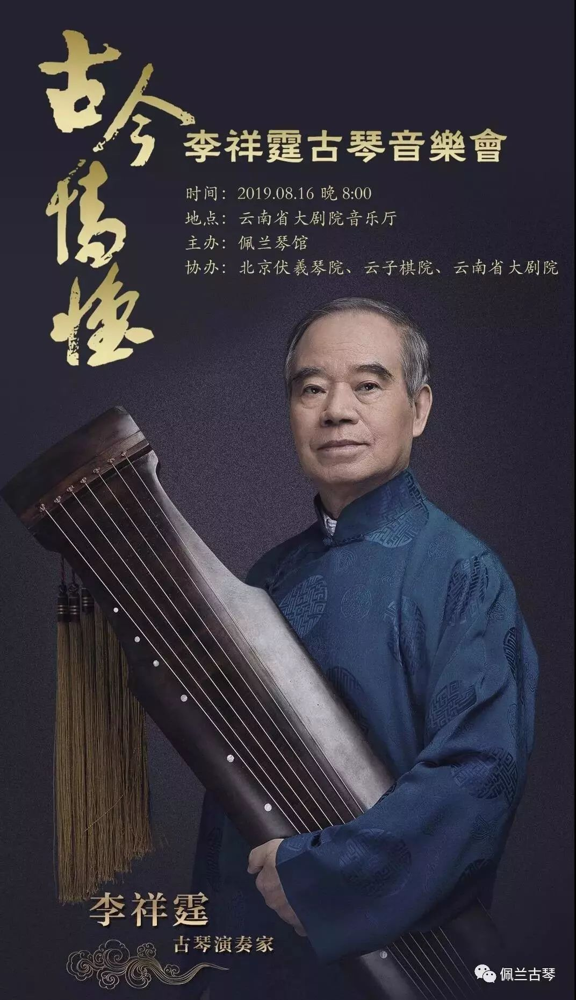
国家级非物质文化遗产古琴艺术代表性传承人
李祥霆是国家级非遗古琴艺术代表性传承人，师从古琴大师查阜西，精通古琴演奏、斫制与琴学理论，演奏风格清和淡雅、意境深远，被誉为“当代古琴第一人”。他首创古琴即兴演奏，让古琴艺术焕发新的生命力，多次在全球举办古琴音乐会，传播中国古琴文化。
他致力于古琴艺术传承与普及，出版琴学著作、开展全球古琴演出与教学，让千年古琴雅乐重回当代生活，守护着中华古琴的千年文脉。
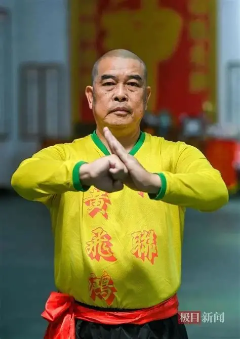
国家级非物质文化遗产醒狮项目代表性传承人
黄钦添是国家级非遗醒狮（舞狮）代表性传承人，精通南狮表演、武术套路与狮艺编排，带领黄飞鸿狮艺武术馆团队将醒狮技艺演绎得刚劲威武、形神兼备，多次在国际醒狮大赛中斩获冠军，被誉为“南狮王”。
他致力于醒狮技艺传承与青少年培养，推动醒狮文化走向世界，让龙腾狮跃的民俗艺术与精神代代传承，用醒狮精神守护着中华民俗文化的根脉。